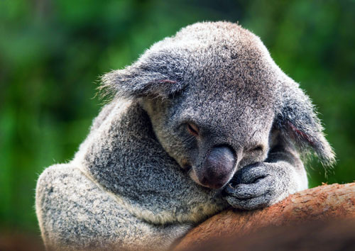
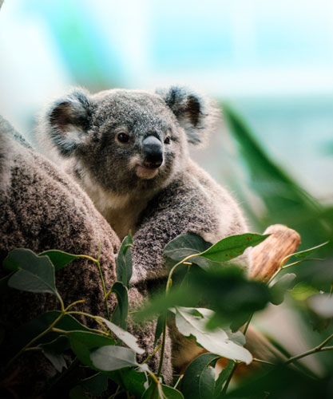

There is currently no legislation, anywhere in the country, that can protect Koalas and Koala habitat in Australia. The listing of the koala as “vulnerable” under the Environmental Protection and Biodiversity Conservation Act in 2012 changed nothing. This is supposed to be the premier law for protecting Australia’s environment, yet it is powerless. By the time you read this page the bulldozers may already be working, but it is not too late to take action. Below we have listed some of the things that might make a difference.

Here's some ways that you can help save the Koala:
Donating to the Koala Foundation
Join the Koala Army
Speak or write your local congressmen
Post information on social media
Adopt a Koala
Conduct a fundraiser

What you can do if you live in a Koala area?
Plant Koala food trees. Don’t forget out find out which kinds of gum trees are the favorites of Koalas in your area.
When out driving, ask your family and friends to be very careful not to hit wildlife crossing roads, especially at night. Remember, Koalas are most active at night.
Keep your dogs your cats inside at night, to protect all wildlife.
If you have a swimming pool, place a sturdy rope into the pool attached to a tree or post at the edge, so that if Koalas fall into your pool, they are able to climb out safely.